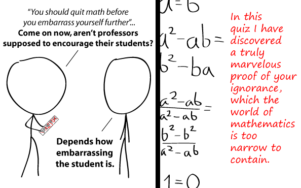

Comic JK 710
When I Feel Like It
⇤
<
?
>
⇥

⇤
<
?
>
⇥
Forum
.
RSS
.
Digg
.
Facebook
.
Reddit
.
Twitter
.
Stumbleupon
Enter your thoughts on number 710 here. Please, no spamming, trolling, phreaking, or being finite yet unboundedly ignora cvxcvc nt. LOL!!!!!!!!!!!!!!!!!!!!!!! Try as you may, you just can't get away from your mother. Fermat's Last Exam. :) The speech text is bold. To me it looks like they are speaking loudly as if they are saying the lines <b>I didn't expect the Spanish inquisition!</b> repeatedly and getting frustrated when the Spanish don't bust through the door. >It's been over 200 years. You lost the war. Get over it. >>We got bored. You kept fighting - Joke's on you! >>>Actually, the only reason the US won is because Britain gave up. It would have been too expensive to send the real army over the Atlantic. Especially given that they'd then have to garrison it to prevent more unrest. So, yeah...you won...by tickling them to death. >>>>So, we won. Get over it. No 's' on math. >>>I think you will still find it it Mathematics, not Mathematic. Therefore, Maths, not Math. >>>>Mathematics is the whole word, but we're too lazy to say that all the time. So we shorten it to "math". No trailing S, because that would be stupid. >>>>> we put an "s" on the end because maths deals with numbers, and there is a plural amount of numbers. >>>>>> Maths and math are not words, they are abbreviations of mathematics. Numerous words have more than one way to abbreviate them, so why can't this particular word have more than one abbreviation? >>>>>>> Because "maths" would be dumb. >>>>>>>>that said from a country that one day apparently decided the word "bad" would actually mean "good"... and the word "wicked" would mean "good"... and the word "evil" would mean "good"... one day a friend-of-friend told me a certain pair of trainers were "really wicked and, like so evil"... I asked: "so... that's a bad thing then ?" he replied: "yo, its so bad, it's like killer, man"... math's? >>>>>>>>It's "mathematics", not "mathsematics", so it's "math", not "maths". >>>>>>>>>>It's irrelevant. The two countries just pick different words for the abbreviation. Another example is acetaminophen (american) and paracetamol (UK). Both are the same drug, taken from the full name: PARA-aCETylAMinophenOL or para-ACETylAMINOphenPHENol. FYI: The british win this one, as the internationally recognised name is paracetamol :D >The rest of us just call it tylenol? Pass the kleenex, I need a bandaid. Nice Tom Lehrer reference. For perhaps the first time I come here and find quite a few unintelligent+unnecessarily argumentative remarks.. :(. some good though. hope not entirely lost. Math short for Mathematic, Maths short for Mathematics as the 's' is always retained in abbreviations for plurals. > No, 's' is not always retained. Abbreviation of ounces is still oz, meters is still m, minutes is still min, liters is still L, watts is still W, and there are plenty more examples. >Most of those a symbols rather than true abbreviations, much like e is natural number, or lowercase omega for ohm. And as for losing the war, I think you'll find it was the French blockade which starved Cornwallis' army of supplies which forced the withdrawal from a position from which victory was near. Unless you believe Mel Gibson that is :) >I think you'll also find that the United States didn't gain its dominance until after World War II, during which it had successfully siphoned off Britain's wealth through extortionate price-fixing of military supplies. The war left the UK having to liquidate its empire to avoid bankruptcy - and the US with a healthy profit. >>How is this relevant? >>>because you may take our empire, but you will NOT take our MATHS WITH AN S :P >>> Free market. Maybe you shouldn't have paid. Then you'd be saying "mathe" and we wouldn't be having this discussion :) >>>>if Britain had *not* paid, and the British Empire - with all her territories - was shared out between Nazi Germany and Imperial Japan... how long exactly would the US have remained free... ? Don't forget that with Britain out of the war, the Reich can field even more men and materiel against the Soviets... zero divided by zero is zero, not one. However, it is a clever try and I would give the kid another try. I'm ok at math but I suck at maths. > Yes, everything after a=b resolves to 0=0. There is only one number here. >>Incidentally, 0! = 1. Go figure > Not that okay; zero divided by zero is not zero. >> While x/0 is not a valid operation, 0/x cannot be a non-zero number. >>>in this answer I have discovered... >>>ok ok, 0/0 may be undefined, but it's not 1 * ( ` ) ) )))( ) ( /( ( /( ((_)() ( /( )()))()) ( (_()((_) )(_))(_))/((_) ) | / |((_)_ | |_ | |(_)((_) | |/| |/ _` || _|| ' (_-< |_| |_|__,_| __||_||_|/__/ Math (OED first cite 1847) predates Maths (1911). >QED bitch! >>Bitches, mind you >Citation needed >though, if precedence is the most important factor, the OED dates "mathematikes" to 1545 and dates "Physick and Mathematickes" to 1573...